Site Navigation & Profile Settings
The basics every ECMS user needs before anything else: finding your way around the homepage, notifications, lists, and search — plus how to update your own profile, password, and notification preferences. This applies to any logged-in user, internal or vendor.
Overview
This guide is deliberately different from the others in this collection. Every other guide walks through a specific ECMS workflow — enrolling a child, approving a budget, submitting an invoice. This one is pure navigation and personal setup: the screens, menus, and settings that show up no matter which workflow you're doing, and that every new ECMS user runs into on day one.
Steps
1View the ECMS homepage
DO Log into ECMS. You land on the Home tab by default.
RESULT The ECMS homepage loads with a dashboard, your assigned tasks, and today's events — plus the full navigation bar across the top (Accounts, Contacts, ECMS Contracts, Budgets, Invoices, Enrollments, and more, depending on your persona).
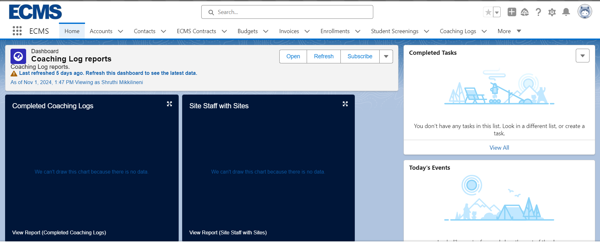
2View bell notifications
DO Click the bell icon in the top-right corner of any ECMS screen.
RESULT A notifications panel opens showing your most recent activity and any open items that need your attention — budget/invoice/enrollment updates, approval requests, and more. A blue dot marks anything unread; opening the panel clears the dot but keeps the activity listed.
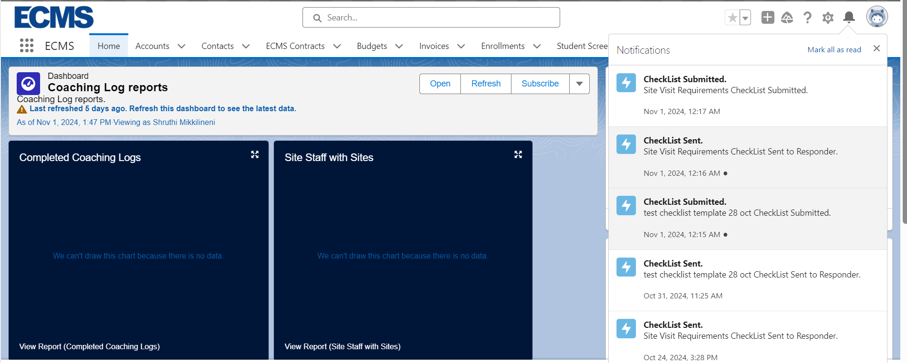
3Pin your preferred list view
DO Open any module tab (Enrollments, Budgets, Invoices, etc.), switch to the list view you use most often, then click the pin icon next to the list view name.
RESULT A confirmation toast appears ("X was pinned"). From now on, every time you open that tab, this pinned list loads first instead of the default "Recently Viewed" list.
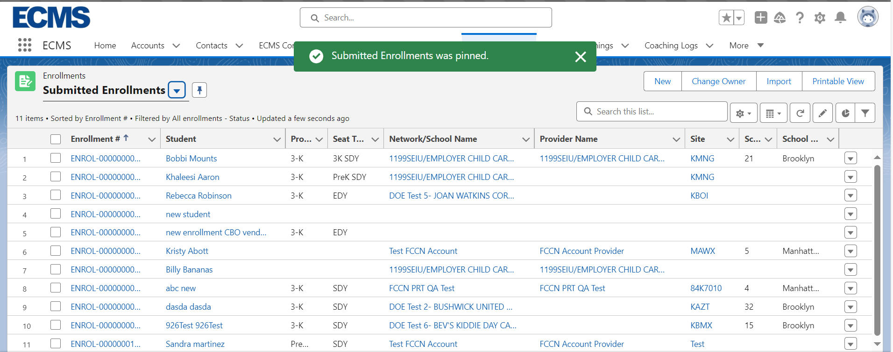
4Edit an existing record
DO From any list view, click the row-level dropdown arrow on a record and choose Edit (or open the record and click Edit on its detail page).
RESULT An inline Edit form opens over the current screen with every editable field on the record, plus Save, Save & New, and Cancel at the bottom.
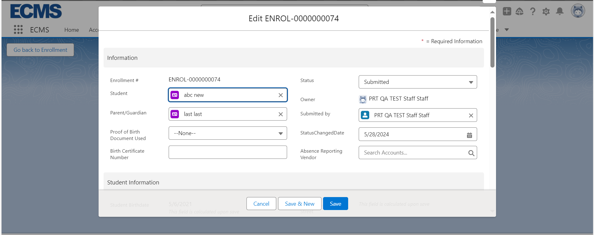
5Delete an existing record
DO From the same row-level dropdown, choose Delete.
RESULT A confirmation dialog appears ("Are you sure you want to delete this <object>?"). Clicking Delete again removes the record; clicking Cancel backs out with no change.
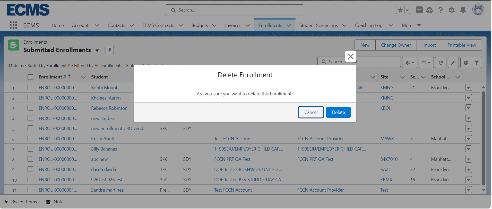
6Change the owner of a record
DO From a list view, select one or more records and click Change Owner, then search for and select the new owner.
RESULT A confirmation toast names the new owner ("X now owns the record for Y"), and the record's Owner field updates immediately.
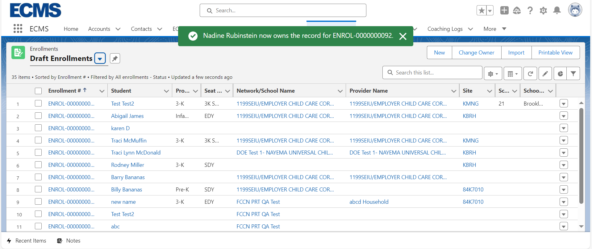
7Search within a list
DO On any list view, type into the Search this list... box in the top-right corner and press Enter.
RESULT The list filters down to matching rows only. Use the filter icon next to the search box to narrow further by a specific column's value (Student, Class, Site, etc.).
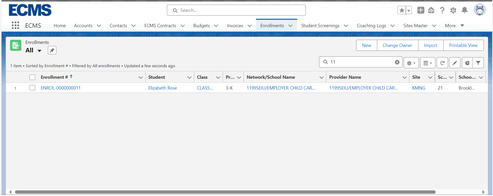
8Use the App Launcher
DO Click the App Launcher (the grid-of-dots icon next to the ECMS logo), then search for an app by name — for example, type "Approval Requests" to jump straight to your Items to Approve list.
RESULT ECMS switches to that app's own tab set. "Approval Requests" opens directly on an Items to Approve list showing everything currently waiting on you across enrollments, budgets, and invoices.
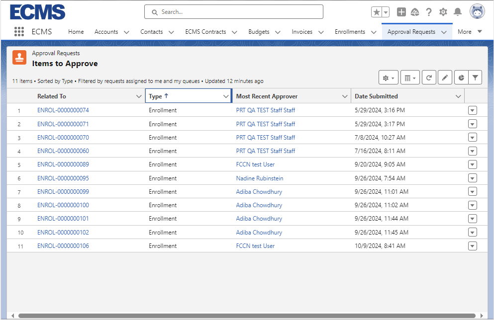
9Use Global Search
DO Click the Search... box at the very top of any ECMS screen (not a list view's own search box) and type any value — a class code, a budget number, a student name, a Site Master name.
RESULT Global Search looks across every object in ECMS, not just the tab you're currently on, and jumps you straight to the matching record.
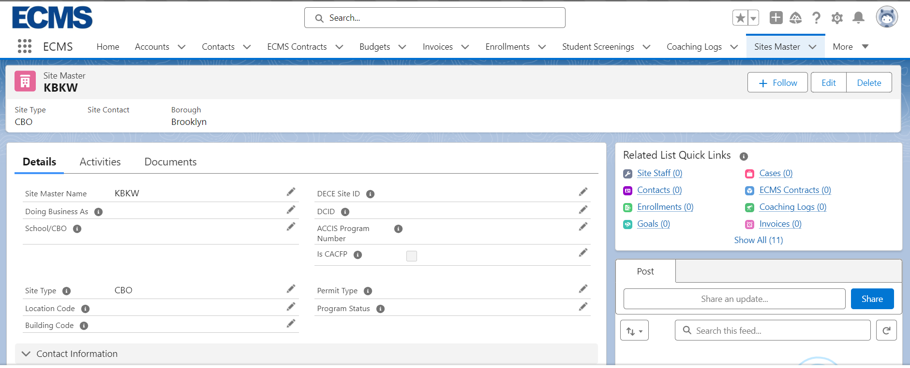
10Update your personal information (internal)
DO Click your profile icon (top-right) → Settings, then find Personal Information under "My Personal Information" in the left-hand Setup menu.
RESULT A form opens with your First/Last Name, Email, Nickname, and other personal fields. Edit any field and click Save to see a "Your settings have been successfully saved" confirmation.
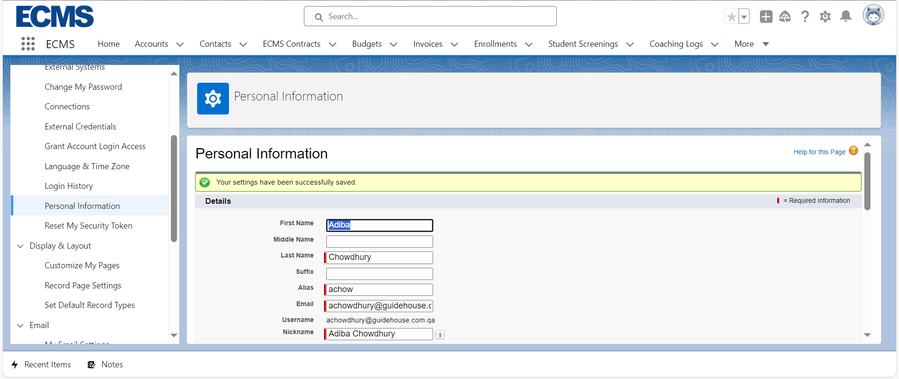
11Update your profile (vendor)
DO In the vendor portal, click your name in the top-right corner, then Profile. Click Edit to change your email, home address, or "About Me" background statement.
RESULT The vendor portal's Profile page shows your Name, Title, Manager, Company Name, Email, Phone, Mobile, Address, and About Me — a simpler, single-page equivalent of the internal Personal Information page.
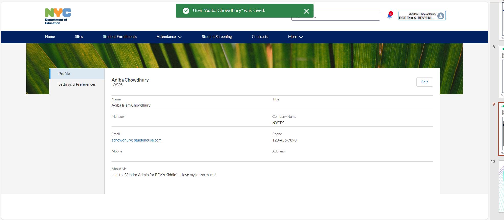
12Change your password
DO Internal: Settings → My Personal Information → Change My Password. Vendor: your name → Settings & Preferences → Change Password.
RESULT A form asks for your new password twice (with a live "Match" confirmation) plus a security question/answer. Saving updates your login credential immediately and shows when it was last changed.
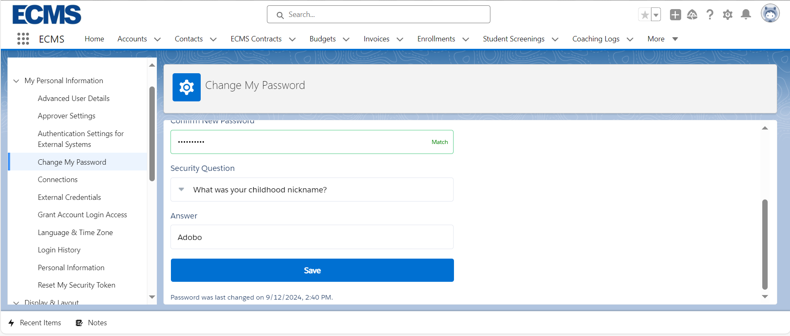
13Update language & time zone
DO Settings → My Personal Information → Language & Time Zone. Choose your Time Zone, Locale, Language, and Email Encoding, then Save.
RESULT Every date/time field you see in ECMS from then on displays in your chosen time zone, and screen text follows your chosen language/locale.
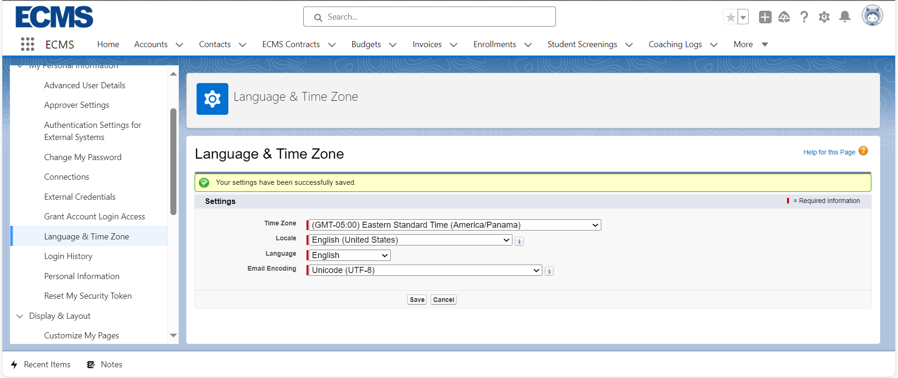
14Add an email signature
DO Settings → Email → My Email Settings, then scroll to the Signature section and type into the Email Signature box (1,333 characters max).
RESULT This signature is automatically appended to outbound ECMS emails you send (for example, comments or notifications triggered from a record you own).
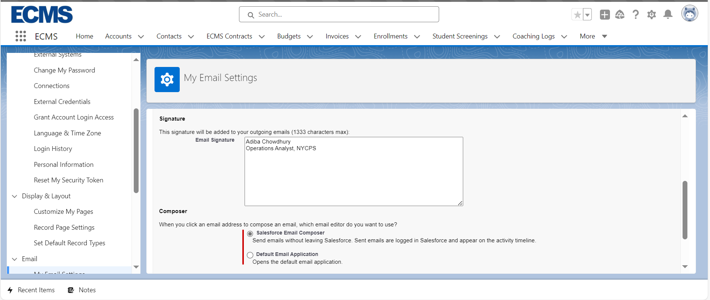
15Set Chatter notification preferences
DO Settings → Chatter → Email Notifications. Check or uncheck which Chatter events (someone follows you, posts to your feed/groups, etc.) should email you, and whether you want a daily/weekly digest instead of individual emails.
RESULT ECMS only sends you Chatter emails for the boxes you've checked, at the frequency you chose.
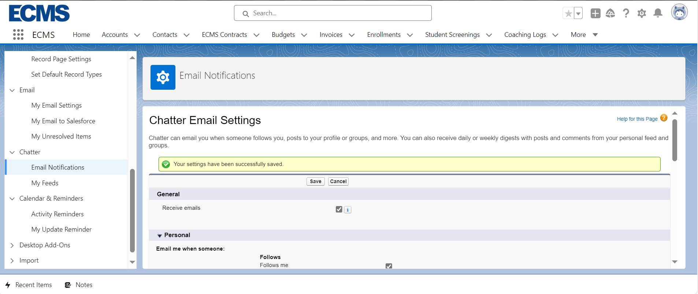
16Vendor settings, all in one place
DO In the vendor portal, click your name → Settings & Preferences.
RESULT Unlike the internal Setup sidebar's many separate pages (steps 10, 12, 13 above), the vendor portal consolidates Username, Email Address, Change Password link, Language, Locale, and Time Zone onto a single My Settings page.
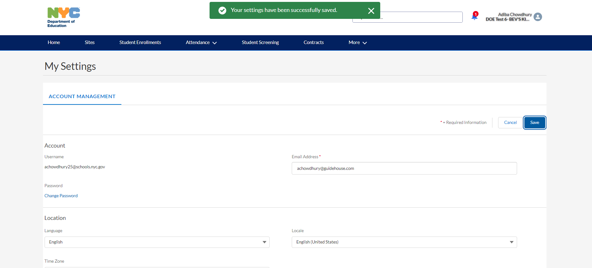